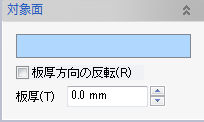
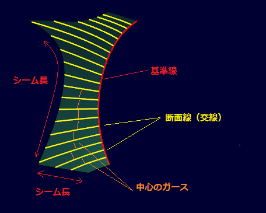
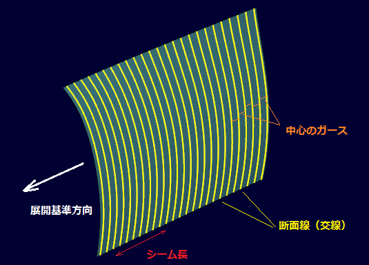
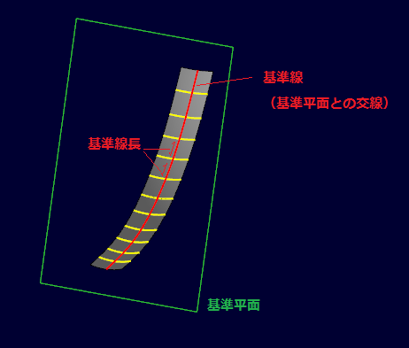
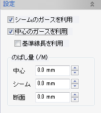
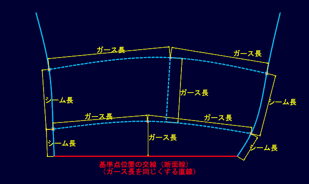
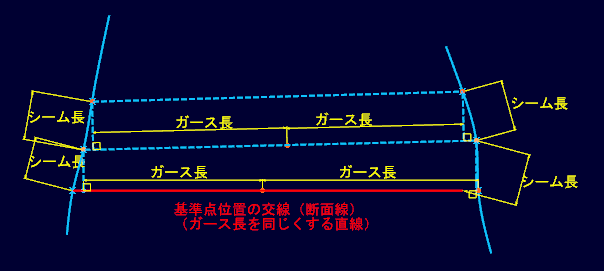
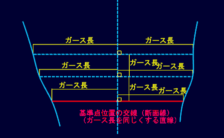

外板部材を一品展開する際のパラメータを設定します。
外板の展開は基準となる線の法平面で断面線ととりながら展開をします。その際の基準線や基準となる点、および断面線の展開での利用法を設定します。
展開パラメータを設定する部材を選択、ＯＫボタンで確定します。付加された属性のシンボルが表示されます。
属性を削除する場合は通常の要素と同様、属性要素を削除します。
シートボディに設定した場合はシートボディに板厚属性も設定されます。

見透し面を設定する外板部材(シートボディ、板部材(ソリッド))を選択します。
シートボディを選択した場合は板厚方向,板厚を設定します。
曲面を展開する際の断面をとる基準線を決定します。以下方法で指定することができます。
選択した線群をそのまま基準線とします。

ここで指定した方向を法線とする平面で断面線をとります。

選択した平面と対象要素との交線基準線とします。

展開の起点となる断面の位置を指定します。指定しない場合は中点の位置が起点となります。
計算した曲面の断面線の実長関係を基に展開をする際の断面間の実長関係のうち、どれを利用して展開するかを指定します。

鐙型（凸型）のように両端のシーム側の実長は縮むと仮定する場合にはシームのガースは利用しない、逆に鞍型（凹型）のように中心を縮めると仮定する場合にはシーム実長のみを利用します。一般の基線展開ではシーム実長、中心の実長をそれぞれ利用して展開をします。
中心の実長関係を追う際の中心位置は基準線長を利用にチェックをいれると、基準線上の実長を利用します。そうでない場合は断面線間の真ん中の位置で適宜システムが計算をして利用します。



のばし実長関係を利用するさいにそれぞれの実長に対してスケールのばし量を設定します。1mあたりののばし量をそれぞれ指定することができます。
展開図にマークされる部材やカーブを設定します。
チェックをいれることで、フレームスペース、バトックライン、ウォータラインをマーキン線として設定をします。